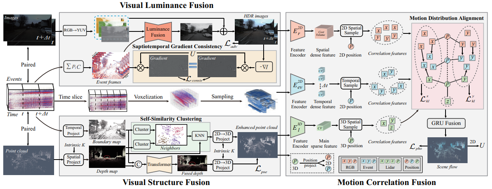
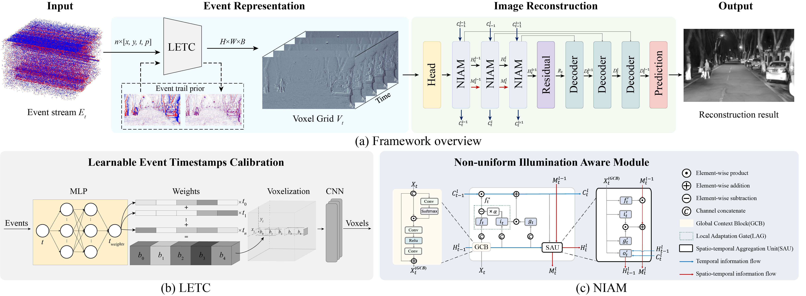
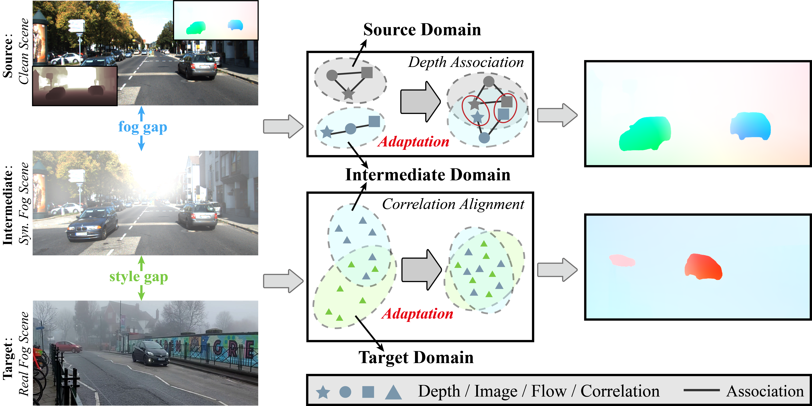
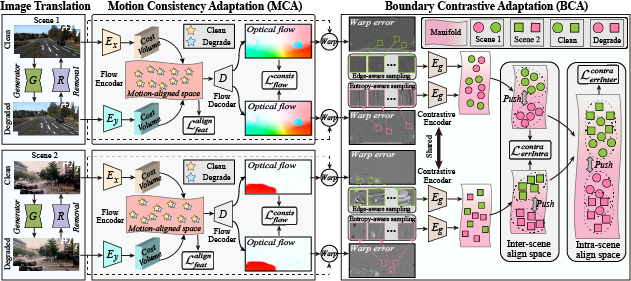
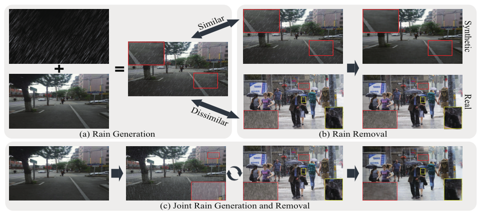
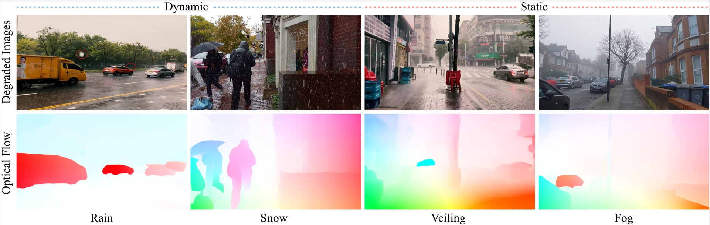

Hanyu Zhou 周寒宇Ph.D. Student
1037 Luoyu Road, |
 |

Biography
Interests
News
- 2024.02, Our VisMoFlow scene flow based on multimodal fusion is accepted to CVPR'24.
- 2024.02, Our NER-Net nighttime event reconstruction is accepted to CVPR'24.
- 2024.01, Our JSTR event-based moving object detection method is accepted to ICRA'24 (Oral).
- 2024.01, Our ABDA-Flow optical flow under nighttime scene paper is accepted to ICLR'24 (Spotlight).
- 2023.02, Our UCDA-Flow optical flow under foggy scene paper is accepted to CVPR'23.
- 2022.11, Our HMBA-FlowNet optical flow under adverse weather paper is accepted to AAAI'23.
- 2021.01, Our JRGR derain paper is accepted to CVPR'21.
Researches
2. Based on multimodality perception system and multimodal dataset, a novel common space-guided domain adaptation framework for optical flow under challenging scenes (e.g., adverse weather and nighttime scenes) is proposed.
3. As for 3D metric motion, a RGB-Event-LiDAR multimodal-based fusion framework for all-day 3D scene flow is developed, achieving the accurate motion estimation in all-day and all-weather scenes.
4. As for independent motion segmentation, a Event-IMU based spatiotemporal reasoning method for moving object detection is introduced, promoting the decoupling of high-speed independent moving object from background under ego-motion conditions.
Publications (Google Scholar)

|
Exploring the Common Appearance-Boundary Adaptation for Nighttime Optical Flow.
Hanyu Zhou, Yi Chang, Haoyue Liu, Wending Yan, Yuxing Duan, Zhiwei Shi, Luxin Yan. International Conference on Learning Representations ( ICLR ), Spotlight, 2024. |
|
 |
Bring Event into RGB and LiDAR: Hierarchical Visual-Motion Fusion for Scene Flow.
Hanyu Zhou, Yi Chang, Zhiwei Shi, Luxin Yan. IEEE Conference on Computer Vision and Pattern Recognition ( CVPR ), 2024. [arXiv] |
|
 |
Seeing Motion During Nighttime with Event Camera.
Haoyue Liu, Shihan Peng, Lin Zhu, Yi Chang, Hanyu Zhou, Luxin Yan. IEEE Conference on Computer Vision and Pattern Recognition ( CVPR ), 2024. |

|
JSTR: Joint Spatio-Temporal Reasoning for Event-Based Moving Object Detection.
Hanyu Zhou, Zhiwei Shi, Hao Dong, Shihan Peng, Yi Chang, Luxin Yan. IEEE International Conference on Robotics and Automation ( ICRA ), Oral, 2024. [arXiv] |
|
 |
Unsupervised Cumulative Domain Adaptation for Foggy Scene Optical Flow.
Hanyu Zhou, Yi Chang, Wending Yan, Luxin Yan. IEEE Conference on Computer Vision and Pattern Recognition ( CVPR ), 2023. |
|
 |
Unsupervised Hierarchical Domain Adaptation for Adverse Weather Optical Flow.
Hanyu Zhou, Yi Chang, Gang Chen, Luxin Yan. AAAI Conference on Artificial Intelligence ( AAAI ), 2023. |
|
 |
Closing the Loop: Joint Rain Generation and Removal via Disentangled Image Translation.
Yuntong Ye, Yi Chang, Hanyu Zhou, Luxin Yan. IEEE Conference on Computer Vision and Pattern Recognition ( CVPR ), 2021. |
|
 |
Adverse Weather Optical Flow: Cumulative Homogeneous-Heterogeneous Adaptation.
Hanyu Zhou, Yi Chang, Zhiwei Shi, Wending Yan, Luxin Yan. IEEE Transactions on Pattern Analysis and Machine Intelligence ( TPAMI ), 2024. |
Awards
Academic Services
Conference PC/Reviewers: CVPR'23-24, AAAI'23-24, ECCV'24, ICRA'24.
© Hanyu Zhou | Last updated: April., 2024